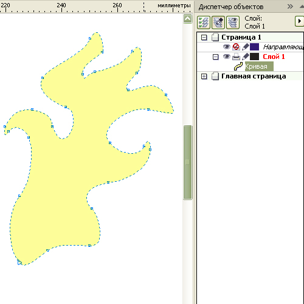
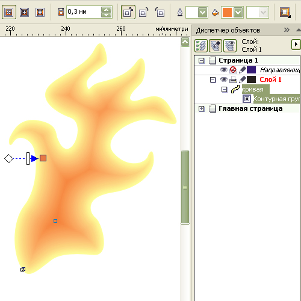
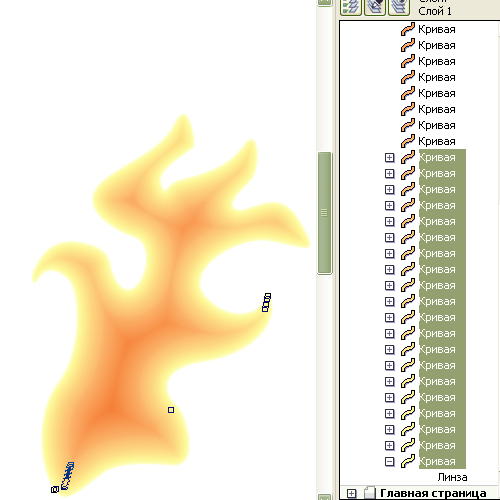
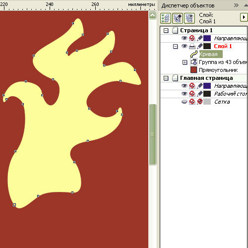
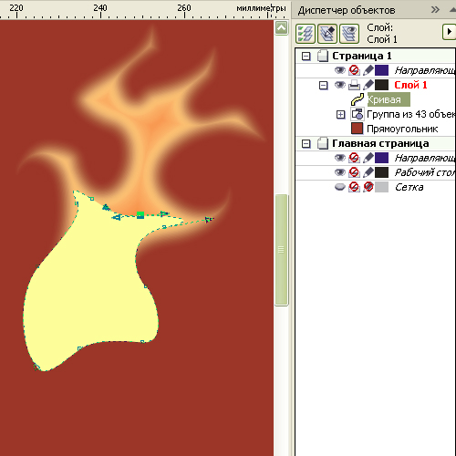
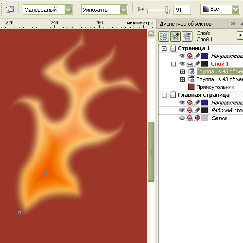
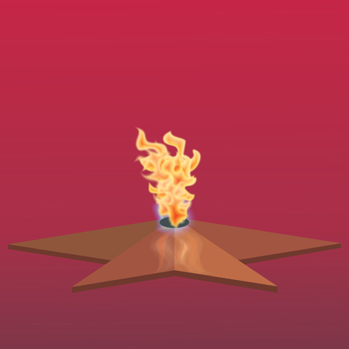

Рисование пламени
Говорят, человек может смотреть на огонь бесконечно.
Зрелище «огненной пляски» действительно завораживает потому, что огонь не статичен, он постоянно меняется, какой-то бесформенный, сгусток пляшущих языков пламени. Для рисования не самая простая задача. Но часто то, что трудно осилить целиком, удаётся одолеть по частям. Также и мы поступим с рисованием огня. Сначала надо понять, что мы рисуем. Собстенно то, что мы видим в пламени, это желтовато-оранжевое свечение сгорающего углерода. Более оранжевый цвет от недостатка кислорода характерен для внутренних областей пламени, а более светлый (интенсивное горение) характерен для крайних участков пламени, особенно в верхушечной части.

1. Нарисуем произвольную замкнутую область в виде языка или нескольких языков пламени и зададим заливку примерно 25 % Y.
Абрис не задавайте.

2. Создайте внутреннюю контурную группу с переходом цвета к оранжевому. Шаг 0,3 мм будет примерно соответствовать линиатуре 85, то есть не самому высокому разрешению (для справки: в газетной печати используется значение 75, в журнальной - 150 и выше). Но высокое разрешение повлечёт увеличение числа линий, с которыми будет работать сложнее, да и требуется более высокое разрешение для контрастных линий, а для плавных тоновых переходов приемлемо менее высокое разрешение.

3. Разъедините контурную группу и исходный объект. Контурную группу разгруппируйте. Выделите в диспетчере объектов около 20 контуров подряд, начиная с самого нижнего (соответствует наружной линии) и задайте однородную прозрачность.
4. Теперь выделяйте поочерёдно каждый контур из этих двадцати и задавайте степень прозрачности от 99(для внешнего контура) до 50 (для внутреннего контура) примерно таким образом: первым пяти – с шагом 1, то есть 99, 98, 97, 96, 95; следующей пятёрке – с шагом 2 (93, 91, 89, 87, 85); затем с шагом 3 (82, 79, 76, 73, 70); и с шагом 5 (65, 60, 55, 50, 45). Строго придерживаться указанных значений необязательно, просто задаётся нелинейно изменяющаяся прозрачность (от внешнего контура – плавно убывающая, а к внутреннему контуру – более резко).

5. Создайте дубль исходного объекта и переместите его на самый верхний уровень, а все остальные контуры сгруппируйте.

6. В верхушечной части пламени сместите точки контура внутрь, а возможно даже и удаление отдельных точек. Нижнюю часть оставьте без изменений.
7. Теперь от такой вот усечённой копии объекта создайте контурную группу точно также, как и от исходного объекта.

8. Также разъедините, разгруппируйте контурную группу и снова сгруппируйте все контуры. Задайте этой группе равномерную прозрачность и режим смешивания Умножить, а степень прозрачности увеличьте примерно до 90%. Всё сгруппируйте.

9. Создав описанным способом несколько фрагментов пламени разной конфигурации и, комбинируя их, Вы получите более интересное изображение огня.
Специально для CDRPRO.RU
Копирование и публикация любым способом без письменного согласия автора запрещены.